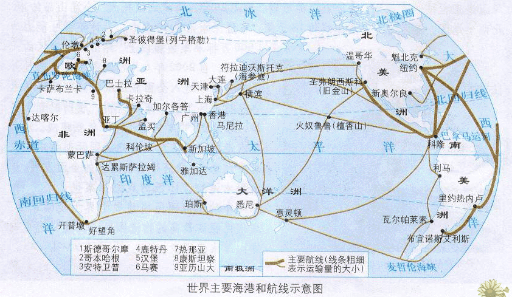

返回主页
全球海上运输线路

海运不是全部贸易。但从历史惯性和经济性分析，海运一直是最重要的经济中因素。要看国际贸易趋势，新加坡（Singapore）是重要的一环。所以，Jim Rogers选择定居新加坡。Jim Rogers是非常善于研究的。
世界十大港口
纽约（New York）(美国)
美国最大的海港，世界最大海港之一，位于美国东北部哈得孙河河口，东临大西洋。纽约港是世界上天然深水港之一，有两条主要航道。一条是哈得孙河口外南面的恩布娄斯航道，另一条是长岛海峡和东河，由北方进港的船舶经过。
鹿特丹（Rotterdam）(荷兰)
鹿特丹是荷兰第二大城市，世界最大的港口，位于欧洲莱茵河与马斯河汇合处。整座城市展布在马斯河两岸，距北海约25公里，有新水道与北海相连。鹿特丹是连接欧、美、亚、非、澳五大洲的重要港口，素有“欧洲门户”之称。
新加波（Singapore）
该港口位于新加坡岛南部沿海，西临马六甲海峡的东南侧，南临新加坡海峡的北侧，是亚太地区最大的转口港，也是世界最大的集装箱港口之一。该港扼太平洋及印度洋之间的航运要道，战略地位十分重要。目前已发展成为国际著名的转口港。
汉堡（Hamburg）(德国)
德国北部一座美丽的港口城市，位于不莱梅东北部易北河岸，汉堡是世界大港，被誉为“德国通往世界的大门”。世界各地的远洋轮来德国时，都会在汉堡港停泊。汉堡是德国的第二大城，仅次于柏林。
香港(中国)
维多利亚港是位于香港的香港岛和九龙半岛之间的港口和海域，是中国的第一大、世界第三大海港，仅次于美国的旧金山和巴西的里约热内卢。维多利亚港水面宽阔，景色迷人，海港的西北部有世界最大的集装箱运输中心之一的“葵涌货柜码头”。
安特卫普（Antwerp）(比利时)
比利时最大的海港，欧洲第三大港，是排名鹿特丹港和马赛港之后的欧洲大港。安特卫普港连同城市于16世纪就成为欧洲十分繁荣的商业港口城市，比利时全国海上贸易的70%通过该港完成。安特卫普港以港区工业高度集中而著称。
休斯顿（Houston）(美国)
美国南方第一大城、宇航中心，休斯顿港口系人工港。全美最大的石油工业中心和第三大港。位于德克萨斯州东南沿海，加尔维斯顿湾西北岸平原上，通过长80公里的通海运河与墨西哥湾相连。
新奥尔良（New Orleans）(美国)
新奥尔良是美国南部城市，濒临墨西哥湾，路易斯安那州一个重要的港口城市，以爵士乐和法国殖民地文化闻名。新奥尔良市是美国路易斯安那州最大的城市，也是美国仅次于纽约的第二大港城。它坐落在路易斯安那州的东南部，密西西比河下游入海处，北临庞恰特雷恩湖。
上海港(中国)
上海是中国经济最发达城市，覆盖长三角及长江中下游地区。上海港中国大陆海岸线的中部、扼长江入海口，地处长江东西运输通道与海上南北运输通道的交汇点，每年完成的外贸吞吐量占全国沿海主要港口的20%左右。
马赛（Marseille）(法国)
马赛是法国的第二大城市和最大海港，该市三面被石灰岩山丘所环抱，景色秀丽，气候宜人。马赛东南濒地中海，水深港阔，无急流险滩，万吨级轮可畅通无阻;西部有罗纳河及平坦河谷与北欧联系，地理位置得天独厚。
Flat3.0 全球化地图
全球海上运输线路
全部图片索引
version:1.0; jobnet@188.com © retter2012.com